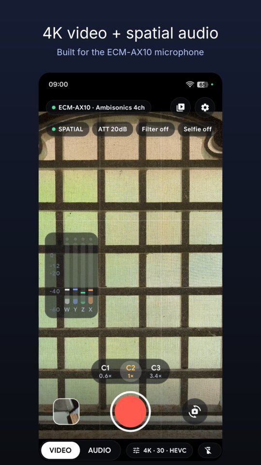
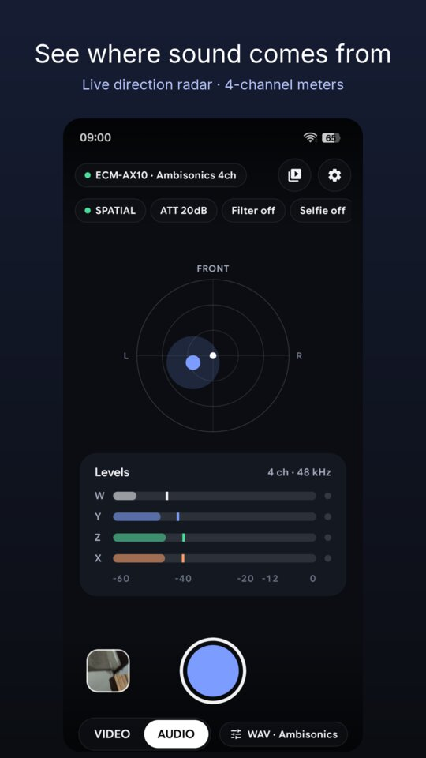
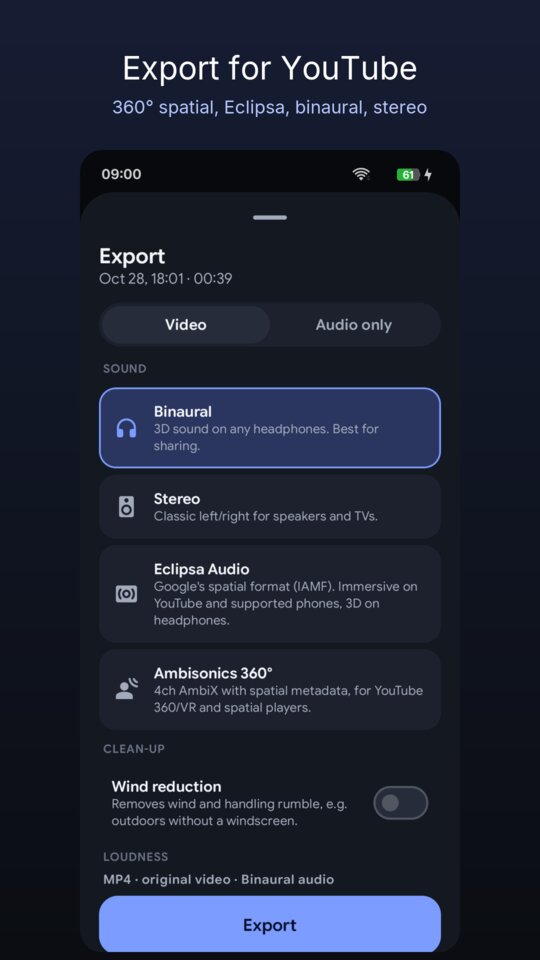

How to join the beta
-
Join the beta group
Open the group and tap Join group. Use the same Google account that's signed in to the Play Store on your phone.
Join the group -
Become a tester on Google Play
Open the testing page and tap Become a tester. If it says the app isn't available, wait a few minutes after joining the group and try again.
Become a tester -
Install from the Play Store
Get the app from its Play Store page. It can take a little while to show up after you opt in. Updates arrive automatically like any other app.
Open in Play Store -
Stay in for at least 14 days
Please keep the app installed and stay opted in for 14 days. Google requires a group of testers over that time before the app can be released publicly, so every tester helps.
Joining from a computer? That works too: do steps 1 and 2 in your browser with the same Google account, then install from the Play Store app on your phone.
What you can do with it



- 4K, 1080p or 720p video at 24/30/60 fps, HEVC or H.264, 10-bit HDR
- Ambisonics (4-channel), binaural and stereo recording with a live direction radar
- Pause and resume while recording
- Export to YouTube 360 spatial audio, Eclipsa Audio, binaural, stereo, 5.1 and 7.1.4
- Audiograms, wind reduction and multitrack projects
What you need
- An Android phone running Android 10 or newer, with a USB-C port that supports USB host (OTG)
- A Sony ECM-AX10 microphone for spatial audio (the phone's own mic works for basic recording)
Questions
The Play Store says the app isn't available
Make sure you joined the group and tapped "Become a tester" with the same Google account that's on your phone. If you have several accounts on the phone, switch to that one in the Play Store. Group membership can take a few minutes to reach Google Play.
How do I send feedback or report a bug?
On the app's Play Store page there's a "Send private feedback" option for testers. You can also email fullscreendev@gmail.com.
How do I leave the beta?
Open the "Become a tester" page above and tap "Leave the program", then uninstall the app if you want to.
Does the app collect my data?
No. It has no internet permission, no ads and no analytics. Your recordings stay on your phone. Read the privacy policy.